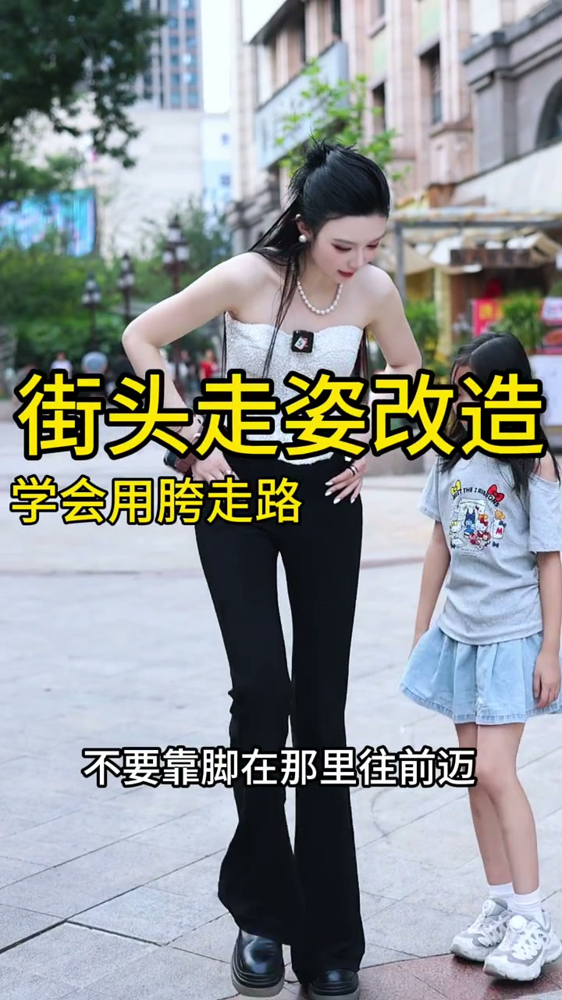
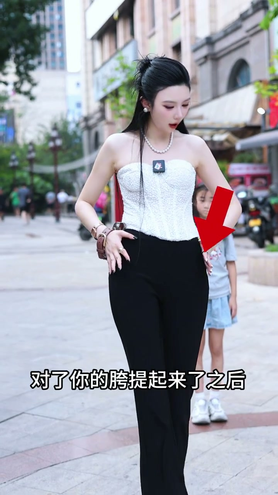
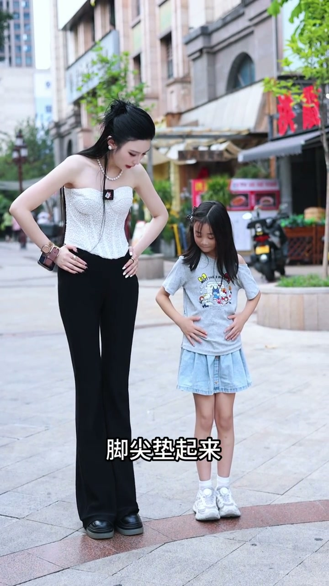
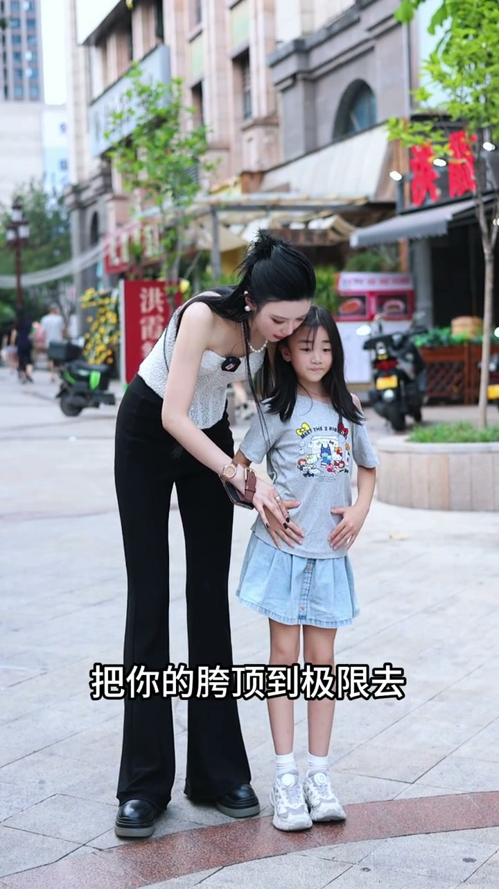
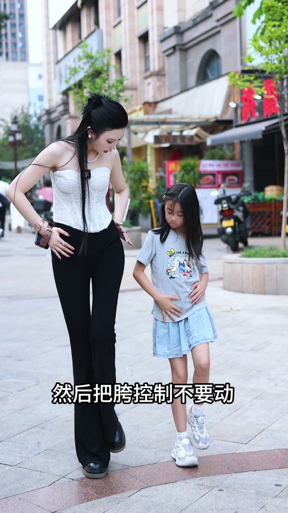

核心：用胯走路
00:00你走路的时候不要靠脚在那里往前迈，我们要用胯去走路。胯在哪里？在屁股横移过来的两边这个位置。
00:12走路时：胯提起来，然后带着脚去走。胯提起来之后，脚顺势往前迈就可以了。

[00:02] 核心观念：不要靠脚迈，要用胯提着脚走
Core idea: don't step with the feet — carry them with the hips
错误示范：胯完全没动
00:19老师演示错误：两个脚就这样走走路走，胯完全没有动。这就是大多数人走路的状态。

[00:16] 错误示范：两个脚交替走，胯完全没参与
Wrong demo: feet alternate while the hips do nothing
练习1：垫脚尖顶胯
00:26把胯动起来：两个手扶着你的胯部。把整个右脚的脚尖垫起来，膝盖伸直往上垫，放下来；左边脚尖垫起来膝盖伸直，往下放。
00:39要点：肩膀要稳住不动，膝盖伸直，背往后展。一垫起来，二放下。垫的时候要垫高，腰要用力，把胯顶到极限。

[00:32] 练习1：垫脚尖、膝盖伸直、腰用力把胯顶到极限
Practice 1: on tiptoes, knees straight, waist pushing the hips to the limit
练习2：胯带脚走
01:13把胯提起来，然后把脚也抬起来，胯控制住不要动，大腿不要动，小腿伸出去，落地用脚后跟。另外一边胯提起来，脚往前延伸落地。
01:31左右交替加速：走胯提起来，左、右往上，腰胯往上，肩膀不动。

[00:52] 节奏训练：一垫起来二放下，加速走
Rhythm drill: one push-up, two down, then speed up

[01:20] 练习2：胯提起带脚，小腿伸出，脚跟落地，左右交替
Practice 2: the hips lift and carry the feet, calves extend, heels land — alternating sides
胯提起来 → 脚顺势迈出 → 小腿伸出去 → 脚跟落地。上半身稳住，只有胯在动。